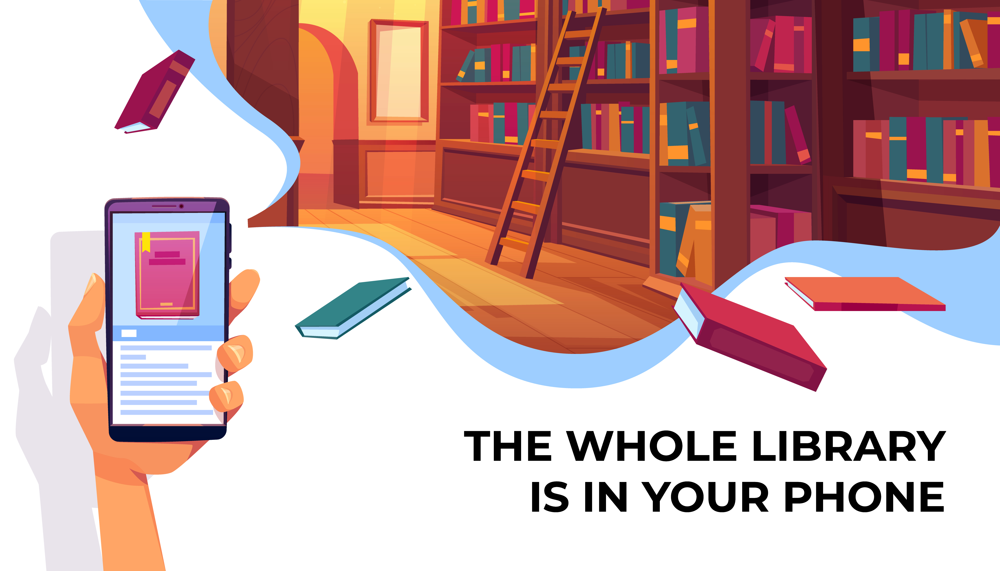

Поповнення книгосховища новими примірниками!
25 Вересня 2026 року — Наша бібліотека отримала понад 500 нових екземплярів сучасного жанру

Ціна квитка: 50 грн.
Кількість відвідувачів перевищила 103 осіб цього місяця!
Старий графік роботи до 19:00 було скасовано.
Тепер ми працюємо до 17:00!
Оригінальна назва східної поезії у нашому фонді: كتاب (書).